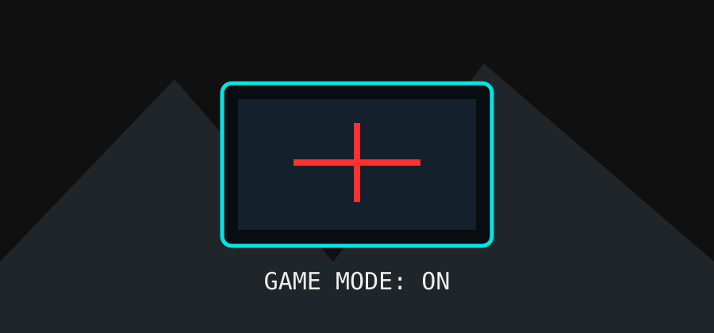

> GAME_DATABASE.TXT
> SCANNING LIBRARY...
> GAME DATABASE LOADED
Saya menikmati game dengan eksplorasi, cerita yang menarik, strategi, dan pengalaman bermain yang santai. Beberapa game yang pernah saya mainkan antara lain Skyrim, Fallout 3, PES, dan berbagai game simulasi.
> FAVORITE GENRES
> FILTER: PERSONAL PREFERENCE
OPEN WORLD
Menjelajahi dunia game dan menemukan hal baru.SIMULATION
Game yang menghadirkan pengalaman mengelola atau menjalankan sesuatu.ADVENTURE
Game dengan cerita, misi, dan eksplorasi.SPORT
Game olahraga dan pertandingan.SYSTEM_PREVIEW.JPG
